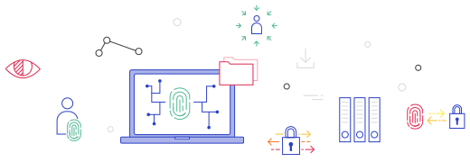
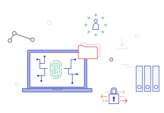

“Wagasya no Tokusyoku”
Known for its pursuit of perfection, traditional Japanese culture is marvelled globally. This pursuit gave rise to the Just-in-Time philosophy, birthed the Kanban System, and even helped produce some of the finest single malt whiskey ever known.
This pursuit, rather than perfection itself, inspires us on a daily basis.
“Wagasya no Tokusyoku” translates to “our company specialty”. Here we offer unique sevices.
Services that create value, meaning and engagement for your customers. Services that competitively differentiate your brand.
For the past decade personal data has been the raw material of digital business. Residing in aggregate form on balance sheets, this asset has created value for businesses and their shareholders.
All of this is changing. 
Consumer trust is in a downward spiral.
Regulation is forcing organisations to change the way they acquire, store and process personal data. In short, people are gaining agency over their data.
This presents an array of challenges for any business requiring personal data to deliver its value proposition.
We’ve been at the forefront of the Privacy Enhancing Technologies (PETs) movement. We’ve designed privacy preserving user experiences for some of the world’s leading brands. Because of this we’re uniquely positioned to conduct research, design experiences, and inform strategy. These services convert the challenge of the human-centered personal data revolution into new value opportunities.
So, we’ve got personal data covered.
How about the economics of design? Is your internal design function self sustaining? Does it create tangible business value?
With us it can and will. Kick start this process with the simple gesture of scrolling.
Running a design sprint can be tough. Generating tangible business value within five days is even tougher.
Building upon the framework that helped launch and refine some of the world’s leading products, we’ve taken it a step further. >X Design Sprints as a Service help solve customer problems quickly and effectively. They also produce tangible business value. Pretty great for a five day exercise.
However, the purpose of this service offering extends beyond that. Your people and teams will walk away equipped with new tools and techniques. This is how we start to embed great design practice in your organisation.
Heard enough and want to get started?
Here’s the next step.
Not quite? Okay. We’re with you.
You want to know who we’ve done this with. What are our creds? The answer awaits!
Heard enough and want to get started?
Here’s the next step.
Not quite? Okay. We’re with you. You want to know who we’ve done this with. What are our creds? The answer awaits!
Our clients